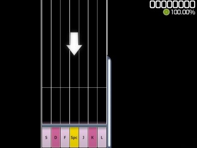

Osu! Mania
Ce mode de jeu ressemble a beaucoup d'autres jeu sur mobile mais , il est plus compliqué!
Tout d'abord, avant de commencer à jouer, il faut aller dans les paramètres, tout décocher les
options
ci-dessous
Voici à quoi ressemble l'interface de ce mode
En haut à droite, il y a le score et en dessous la précision
Au milieu , la grille de jeu ou les notes arrivent
Il y a 2 types de notes , les notes simples et les notes longues
Le but est simple :
-Pour les notes simples, il suffit de presser la touche qui correspond à la bonne colonne quand la
note atteint la zone la plus basse
- Pour les longues notes, il suffit de presser la touche qui correspond à la colonne quand la note
atteint la zone la plus basse, puis la relâcher à la fin de la note
Le score maximum dans ce mode de jeu est de 1 000 000 et la précision maximum, comme dans un
standard, est de 100%.
Pour atteindre le score et la précision max, les précisions
obtenues sur les notes ont plusieurs
paliers, plus on est en rythme, plus la précision sera haute
| Parfait | +- 16.5ms |
| Exellent | +- 40.5ms |
| Très bien | +- 73.5ms |
| Bien | +- 103.5ms |
| Mauvais | +- 127.5ms |
| Raté | Le reste |
Dernier Tips
pour le confort au début du niveau vous pouvez appuyer sur f3 pour diminuer la vitesse et défilement
des notes et sur f4 pour augmenter la vitesse